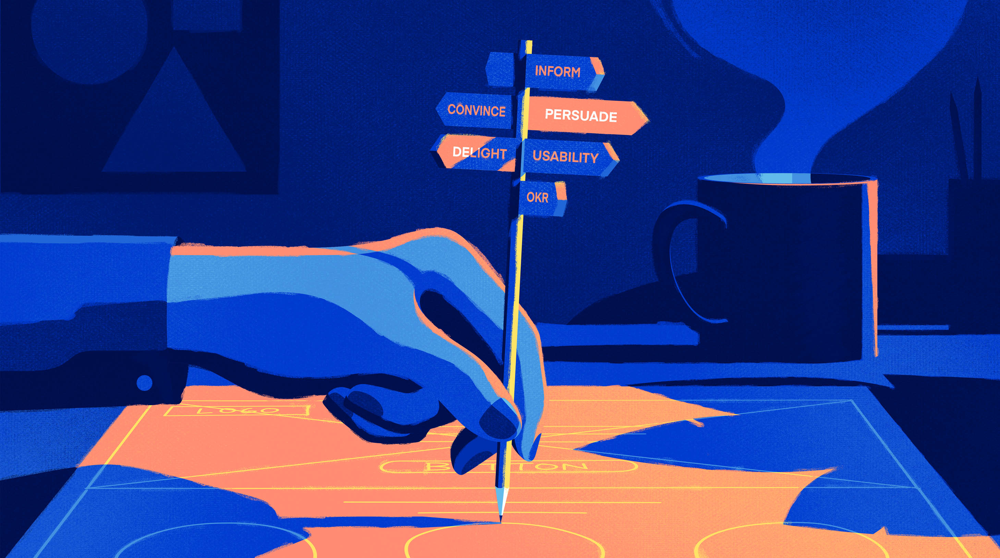

/design_ethics
(30_may_2022)
This course was led by Ariel Guersenzvaig, professor and director of the Master's Degree in
Design and Management of User Experience and Digital Services at ELISAVA. Ariel theorises and
reflects on technology, using references from philosophers and thinkers of the modern and
contemporary era.
During these sessions, we were able to talk about many important topics that we don't usually
analyse in our day-to-day life but that has a key relevance in the design and development of new
projects and technologies. Topics such as what is technology, what is its role in our lives, what
are its implications in our society, etc. were discussed. We also talked about the word design,
who is considered a designer, and what is the job of a designer.

Finally, we reflected on the ethical issues involved in the design and looked at different
examples of what it means to design in one way or another. We talked about ways of influencing
people to perform a certain action or constraint with a design (nudge theory, unpleasant design,
coercion, persuasion, seduction...). We also talked about how to integrate ethics with design,
asking ourselves questions beyond the functioning of what we design, i.e. whom it will affect,
what the consequences might be, how it will be in 20 years, etc.
As a task, we had to ask ourselves some of these questions in relation to our projects, ask
ourselves the ethics of our project and understand what it implies, in the best and worst case
scenarios. This is my reflection on this exercise: